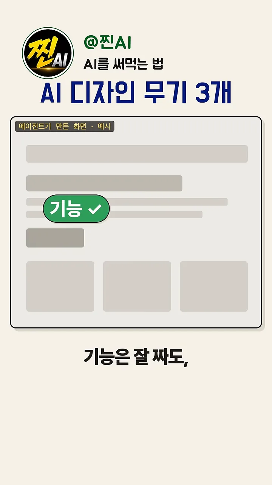
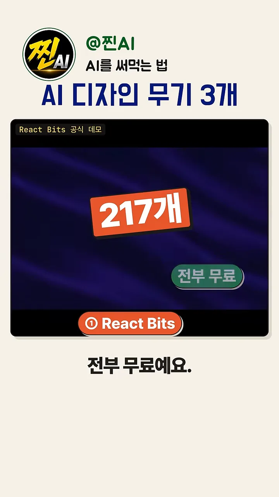
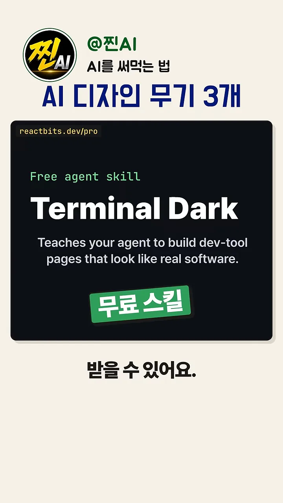
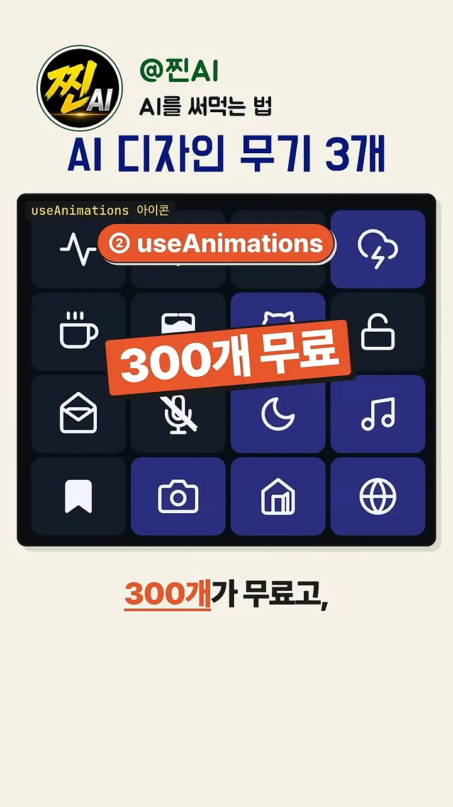
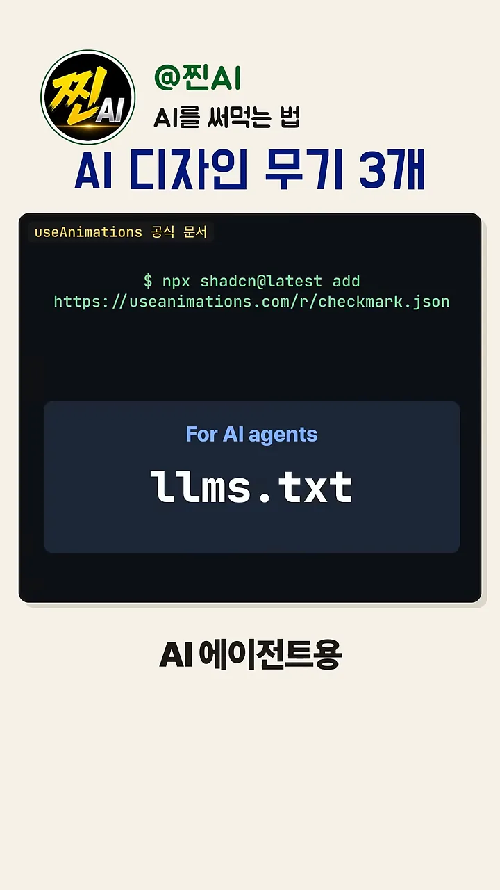
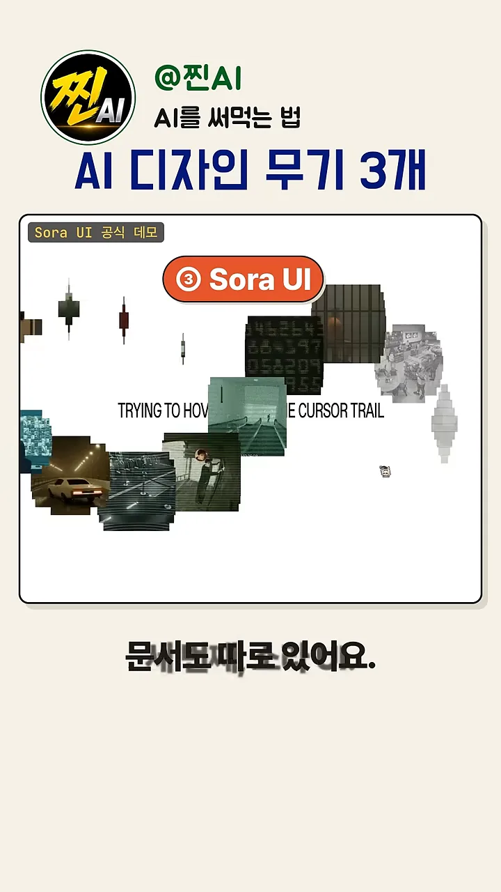
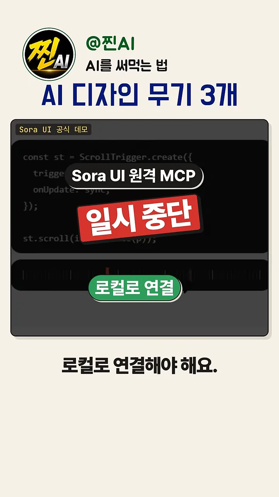

밋밋한 화면과 첫 번째 도구 React Bits
영상은 문제부터 짚어요. 클로드 코드 같은 에이전트는 기능은 잘 짜도 화면 디자인은 약한 편이라, 만들어 놓은 사이트가 밋밋하다는 거예요. 아래 화면 위쪽 '에이전트가 만든 화면 · 예시'라는 표시처럼, 회색 막대와 상자만 늘어서 있고 '기능' 칸에만 초록 체크가 붙어 있어요.

첫 번째: React Bits
첫 도구는 React Bits예요. 움직이는 컴포넌트와 배경을 모아 둔 라이브러리인데, 화면에 '217개'와 '전부 무료'가 크게 박혀 있어요. 뒤에 깔린 보라색 물결도 React Bits 공식 데모의 배경 효과예요.

더 좋은 점은 에이전트에게 맡길 수 있다는 거예요. 화면 맨 위 첫 줄이 MCP를 클로드에 연결하는 공식 명령어예요. 연결한 뒤 가운데처럼 '글자가 흩어지며 나오는 제목 넣어 줘'라고 한 줄만 쓰면, 에이전트가 맞는 컴포넌트를 찾아 아래 줄의 npx shadcn@latest add로 설치까지 해 줘요.
npx shadcn@latest mcp init --client claude에이전트 스킬도 하나는 무료로 받을 수 있어요. 화면 주소창 자리에 reactbits.dev/pro가 보이고, 'Free agent skill'로 소개된 스킬 이름이 Terminal Dark예요. 설명은 개발 도구 페이지를 진짜 소프트웨어처럼 보이게 만드는 법을 에이전트에게 가르친다는 내용이에요.

useAnimations: 움직이는 아이콘 300개
두 번째는 useAnimations예요. 화면에 커피잔, 자물쇠, 달, 음표 같은 아이콘이 격자로 깔려 있고, 가운데 '300개 무료' 스티커가 붙어 있어요. 아이콘 하나하나가 움직이는 애니메이션 아이콘이에요. 영상은 상업용으로도 쓸 수 있다고 덧붙여요.

추가하는 방법도 명령어 한 줄이에요. 화면 위쪽이 체크 표시 아이콘을 넣는 명령이고, 아래 파란 칸의 'For AI agents · llms.txt'가 에이전트용 문서예요. 에이전트가 이 문서를 읽으면 어떤 아이콘이 있고 어떻게 넣는지 바로 알 수 있어요.

npx shadcn@latest add https://useanimations.com/r/checkmark.jsonSora UI: 스크롤·커서에 반응하는 컴포넌트
세 번째는 Sora UI예요. 스크롤과 커서에 반응하는 컴포넌트를 모아 둔 곳이에요. 아래 공식 데모에서는 가운데 'TRYING TO HOVER… THE CURSOR TRAIL' 문구 주변으로, 커서가 지나간 자리를 따라 사진 조각이 흩뿌려져 있어요. 영상은 이런 컴포넌트를 소스 코드째 무료로 가져올 수 있다고 소개해요.

다만 주의할 점이 하나 있어요. 화면에 'Sora UI 원격 MCP'와 빨간 '일시 중단' 스티커, 그 아래 초록 '로컬로 연결'이 차례로 붙어요. React Bits처럼 원격으로 바로 붙이는 방식은 지금 막혀 있으니, MCP로 쓰려면 내 컴퓨터에서 돌리는 로컬 연결로 바꿔야 한다는 뜻이에요.

세 도구 한눈에 보기
| 도구 | 무엇을 주나요 | 무료 범위 | 에이전트 연결 |
|---|---|---|---|
| React Bits | 움직이는 컴포넌트와 배경 | 217개 전부 + 에이전트 스킬 1개 | MCP, 프롬프트 한 줄로 찾고 설치 |
| useAnimations | 움직이는 아이콘 | 300개, 상업용 가능 | 명령어 한 줄 + AI 에이전트용 문서 |
| Sora UI | 스크롤·커서에 반응하는 컴포넌트 | 소스 코드째 무료 | 원격 MCP 일시 중단, 로컬로 연결 |
영상은 '어떤 움직임부터 넣어 볼지'를 묻고 끝나요.